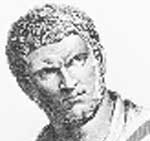

Hem güçlü bir Roma imparatoru hem de bir filozof olan Marcus Aurelius (121-180) döneminin en önemli felsefi metinlerinden birini yazmıştır. İmparatorun Doğu Avrupa’daki savaşlar sırasında yazdığı Meditations kişisel erdem ve kadere boyun eğmenin önemini vurgulayan Stoa felsefesinin en bilinen metinleri arasında yer almaktadır.

Marcus Roma İmparatorluğu gücünün doruğundayken ülkeyi yöneten Beş İyi İmparator’un sonuncusu olarak tanınmaktadır. Pax-Romana ya da Roma Barışı olarak anılan bu dönemde sanat, felsefe ve ticaret alanlarında büyük gelişmeler yaşanmıştır. Filozof-imparator bu dönemi daha uzun bir süre devam ettirebilmek için mücadele vermiş, ancak ölümünden kısa bir süre sonra Roma Barışı son bulmuştur.
Tam adı Marcus Annius Verus olan filozof, İmparator Trajan’ın (53-117) uzak bir akrabasıydı. Babası bir devlet görevlisiydi. Marcus, babasının kendisine alçakgönüllü ve erkekçe bir kişilik kazandırdığını ifade etmiştir. On yedi yaşındayken babası ölür. Bunun üzerine Marcus 138 yılında imparator olan Antoninus Pius (86-161) tarafından evlat edinilmiştir. Antoninus, çocuğun yetiştirilmesi için Roma’nın en iyi öğretmenlerinden biri olan Marcus Cornelius Fronto’yu (100-170) tutar.
Antoninus’un ölümünün ardından Marcus, 40 yaşındayken tahta çıkar ve Aurelius adını alır. Üvey kardeşi Lucius Verus (130-169), 8 yıl boyunca ülkeyi onunla birlikte ortaklaşa yönetmiştir. Tahtta kaldığı sürenin büyük bölümünde Asya’daki Parthia İmparatorluğu ve Avrupa’daki Alman kabileleri ile yapılan savaşlarla meşgul olmuştur.
Marcus’un, Meditations’ı Alman kabilelerinden biri olan Quadi ile olan savaş sırasında yazdığı tahmin edilmektedir. Bu kitap on iki kitapçıktan oluşan bir derlemedir. Hem imparatorun otobiyografisi hem de Stoacılık üzerine yazılmış eserlerin en ünlüsüdür.
Stoacılara göre ölümden sonra hayat yoktur. Her erkek ve kadının kaderinde unutulmak vardır. “Doğanın tüm yaratıkları ölüme yazgılıdır,” diye yazar imparator.
Marcus insanların erdemli bir şekilde yaşaması gerektiğine inanır. İnsanlar doğaya uygun bir biçimde yaşamalıdırlar: “Eğer böyle yaparsan, hiçbir şey ummaz, hiçbir şeyden korkmaz, yaptığın her işten ve söylediğin her sözden hoşnut olursan, ancak öyle mutlu olabilirsin.”
Bugünkü Viyana’ya yaptığı bir ziyaret sırasında öldüğünde 58 yaşındaydı. Yerine oğlu Commodus (161-192) geçti.
Ek Bilgiler
1- Çocukluğundan itibaren çalışkanlığı ve zekası ile dikkat çeken Marcus, İmparator Hadrian (76-138) tarafından rahip yapıldığında sadece sekiz yaşındaydı.
2- Roma İmparatorluğu’nda tahta geçme hakkı sözde kalıtsal olmasına rağmen, Marcus selefinin biyolojik evladı olmadan ardarda tahta geçen beşinci Roma imparatorudur. Oğlu Commodus neredeyse son yüz yıl içerisinde tahtı babasından devralan ilk imparator olmuştur.